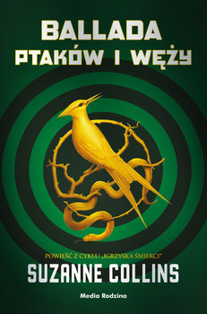

BIBLIOTEKA
Strona główna
Najładniejsze biblioteki
Recenzje ksiażek
Przekierowania do sklepu
RECENZJE
Czas na recenzje! Jest to mój must have na liście kroków, według których kupuję książki. Zawsze czytam recenzcje przez zakupem (jeśli tylko owe są) i pomaga mi to czasami zaoszczędzić pieniadze. Pamiętajmy jednak, że są to moje subiektywne opinie - ty możesz mieć własne, kompletnie od moich różne :}
1. Stephan King PÓŹNIEJ
Zacznijmy mistrzem horrorów!

RECENZJA
Jest to nowość od Kinga, a jednocześnie jego pierwsza książka, która trafiła w moje ręce. Jestem nią absoltnie zachwycona i inne pozycje od Kinga z automatu zaliczają się do mojej listy Do przeczytania. Jest to idealna mieszanka grozy, dramatu, humoru i dobrej zabawy. W książce wiele razy przewija się stwierdzenie, iż jest to horror i trochę w tym racji - czytana po nocach, wywołuje gęsią skórkę i irracjonalne wrażenie, że ktoś na nas patrzy. Jednakże, czy nie po to sięga się po pozycje Kinga? Po dreszczyk grozy i emocji? W skali 1-10, daję jej pełną 10.
STRESZCZENIE
Tylko umarli nie mają sekretów. Jamie od najmłodszych lat widuje zmarłych. I nie przypomina to tego, co znamy ze słynnego filmu z Bruce’em Willisem. Jamie może zobaczyć to, czego nikt inny nie widzi, i poznać sekrety, których nikt inny nie zna. Ale cena, jaką musi płacić za swoje nadnaturalne zdolności, jest bardzo wysoka. O czym doskonale wie matka Jamiego, która namawiała go, aby nikomu nie mówił, co potrafi. Taki dar nie może długo jednak pozostać niezauważony. I Jamie wkrótce będzie musiał pomagać nowojorskiej policji w śledztwie w sprawie, w której pewien morderca groził uderzeniem zza grobu.
Czasami dorastać znaczy stanąć twarzą w twarz z prześladującymi cię demonami.
2. Luis Montero Manglano MUZEUM LUSTER
Były horrory, nadszedł czas na thillery

RECENZJA
Muzeum luster to fascynująca książka. Pisana przez znawcę sztuki, zawiera w sobie pełno opisów obrazów, budynków, malarzy, czy sztuki architektonicznej obecnej w danych czasach. O ile dla osób zainteresowanych tematem może wydawać się to niezwykle ciekawe, o tyle mnie najzwyczajniej w świecie nudziło. Nie oznacza to jednak, że thiller nie godny jest swojego miana. Wręcz przeciwnie! Książka porywa i przez dosyć długi czas nie może wyjść z głowy. Aby dobić się do "mięsa" trzeba najpierw przebić się przez pierwsze nudne rozdziały. Później jednak, czeka już tylko świetna fabuła. Ksiażka opowiada o sekcie i rytualnych mordach oraz znawcy symboli, zagubionym w świecie swojego umysłu i kopistce-amatorce, która przez przypadek została w to wciągnięta. 8,5/10 (na pewno na plus jest świetnie wykreowana postać Guillerma oraz cudna okładka i wnętrze książki).
STRESZCZENIE
Jaką śmiertelną tajemnicę kryją obrazy w Muzeum Prado?
Dobry obraz to nic więcej jak lustro.
Podczas Międzynarodowego Konkursu Kopistycznego w Muzeum Prado dochodzi do serii brutalnych zabójstw. Sprawcy odtwarzają w nich najsłynniejsze obrazy ze zbiorów galerii. Policja tkwi w martwym punkcie. Dwie osoby mogą pomóc rozwikłać tajemnicę makabrycznych zbrodni: kopistka amatorka i ekscentryczny specjalista od symboli.
Mrożący krew w żyłach thriller o sekretach ukrytych w obrazach Velazqueza, Goi czy Boscha. Nawet sobie nie wyobrażasz, ile ich się tam kryje…
3. Suzzane Collins BALLADA PTAKÓW I WĘŻY
Jedna z najpopularniejszych autorek sience-fiction

RECENZJA
Chociaż książka do sprzedaży tarfiła już w ubiegłym roku, dopiero ostatnio znalazłam czas, żeby ją przeczytać. I ktokolwiek jeszcze tego nie zrobił, a jest (lub nawet niekoniecznie) fanem Igrzysk Śmierci, powinien zrobić to jak najprędzej! Książka to zupełne arcydzieło! Nie jest to kontynuacja serii o Katniss i Peta, jednak rozgrywa się w stolicy Panem podczas jednych z pierwszych Głodowych Igrzysk. Głównym bohaterem jest przodek znienawidzonego prezydenta Snowa, którego poznajemy od zupełnie innej strony. Poznajemy całą ideę Głodowych Igrzysk od zupełnie innej strony. Książka przez naprawdę długi czas nie mogła wyjść mi z głowy i jest to jedna z moich ulubionych pozycji. Wciąga całkowicie i sprawia, że czytelnik nie może doczekać się, co czeka go na drugiej stronie. Bezkompromisowe 10/10.
STRESZCZENIE
Dziesiąte Głodowe Igrzyska rozpoczyna poranek dożynek. Na Kapitolu osiemnastoletni Coriolanus Snow przygotowuje się, by jak najlepiej wykorzystać szansę na chwałę – jako mentor. Jego rodzinny dom podupadł i kruchy los mężczyzny zależy teraz od tego, czy Coriolanus zdoła pokonać innych mentorów urokiem i sprytem.
Tyle że los nie bardzo mu sprzyja. W udziale przypadła mu dziewczyna z Dystryktu Dwunastego, najbiedniejszego z biednych. Losy obojga splotą się ciasno – każda decyzja, jaką podejmie Snow, może prowadzić do sukcesu lub porażki, triumfu lub klęski. Na arenie walka trwa aż do śmierci, ale poza areną Coriolanus zaczyna współczuć trybutce… Wie jednak, że musi zrównoważyć obowiązek postępowania według zasad z chęcią przetrwania niezależnie od ceny.
4. Remigiusz Mróz ILUZJONISTA
Czas na polskiego mistrza gatunku
RECENZJA
Książki Remigiusza Mroza zupełnie skradły mi serce i tak samo stało się w przypadku Iluzjonisty. Jest to kontynuacja Behawiorysty, którego jednak nie miałam okazji przeczytać - a żałuję. Wychodzi bowiem trzecia część - Ekstermista. Lecz wracając, do Iluzjonisty... Początkowo niezwykle cieszyłam się na rozpoczęcie tej książki, jednak moje zapały ostudziły pierwsze rozdziały. Byłam zawiedziona. Spodziewałam się więcej "mięsa", brutalności, tymczasem nie dostałam nic takiego. Dostałam jednak irytującą główną postać - Małgorzatę Rosę. I o ile moje pierwsze wrazenie przeszło wraz z zwiększającą się ilością przeczytanych stron, o tyle niechęć do Gośki - ani trochę. Dla mnie psuła ona całą fabułę. Po Behawiorystę oraz Ekstermistę napewno sięgnę w wolnym czasie, lecz nie będzie to mój must have. Iluzjoniście daję 8/10.
STRESZCZENIE
Drugi tom przygód byłego prokuratora, behawiorysty Gerarda Edlinga pod tytułem Iluzjonista napisany przez Remigiusza Mroza to historia pełna tajemnic, skrywanych faktów i nieoczekiwanych zwrotów akcji. Gdzie w tym wszystkim tkwi prawda i jak poradzi sobie z nią bohater książki?
O czym jest Iluzjonista?
Po traumatycznych przeżyciach bohater Behawiorysty musi tym razem stawić czoła dawnej sprawie tzw. Iluzjonisty. Jest przekonany, że przed laty do więzienia trafił złoczyńca. Ktoś jednak pokazuje mu, jak bardzo się myli.
Gerard Edling musi zmierzyć się z mordercą, który rzuca podejrzenia na inne osoby, sam zachowując anonimowość. Wypala on na ciałach swoich ofiar znaki zapytania, tak samo jak przestępca z 1988 roku. Pozostawia zagadki, które tylko Edling może rozwiązać. Jak to możliwe, że zwyrodnialec tak wiernie powiela modus operandi wcześniejszego zbrodniarza?
Trzymająca w napięciu, pełna zagadek fabuła.
Kiedy kolejne tajemnice z przeszłości wychodzą na jaw, cała sprawa nowej serii morderstw w Opolu jeszcze bardziej się komplikuje. Czego dowiesz się o ekscentrycznym behawioryście? Poznaj jego prawdziwą miłość i sprawdź, czy rzeczywiście ponad 30 lat temu zamknął w więzieniu niewłaściwą osobę, czy może ma do czynienia z naśladowcą?
Do czego doprowadzi nieformalne śledztwo Gerarda Edlinga? Czy pozna on tożsamość Iluzjonisty?
Pssst! Rozpoczęły się zdjęcia do serialu na podstawie Behawiorysty!